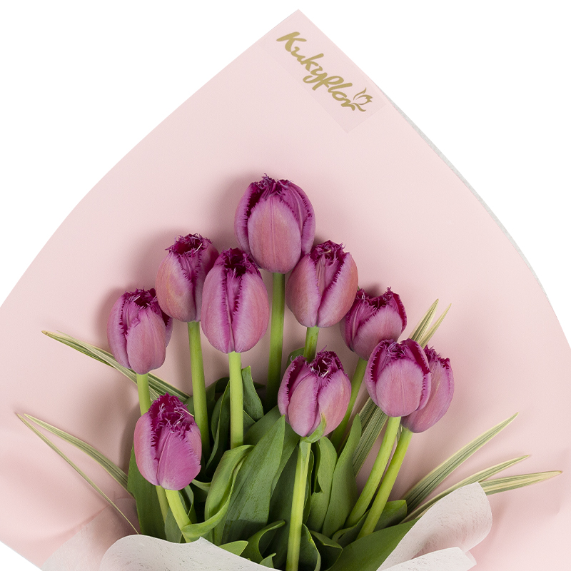

Es un símbolo del amante perfecto, la pasión y el romanticismo. El tulipán es un símbolo de amor sincero. Es una flor increíblemente romántica que al regalarla expresas enamoramiento, pasión, amor incondicional, amor puro, etc. Los tulipanes tienen un tallo bastante grueso, un bulbo en la base de la flor que le permite acumular agua. Esto hace que tambíen sobreviva temperaturas frías.
diversity_4 Son más de 4.000 las variedades existentes y se cultivan en una gran gama de colores:
|  |